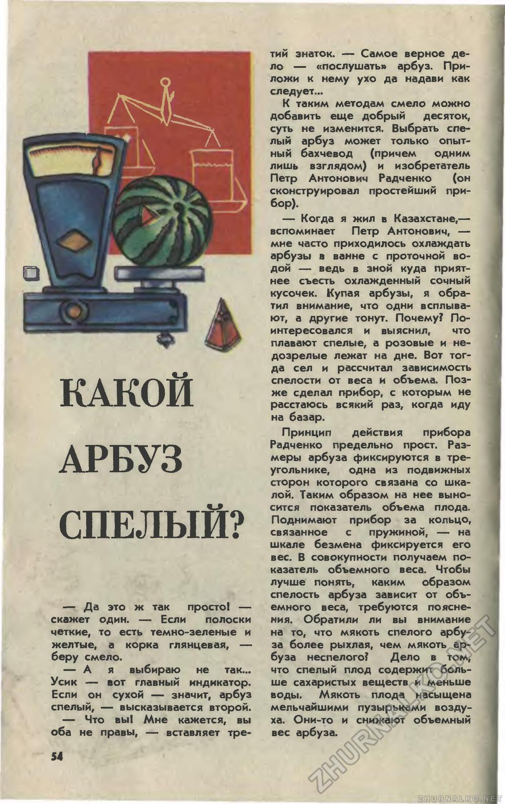
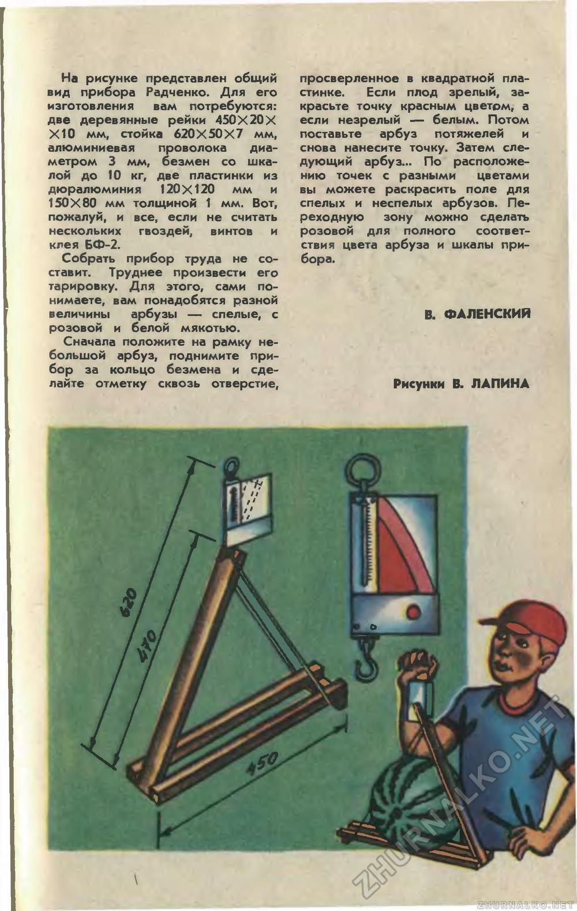
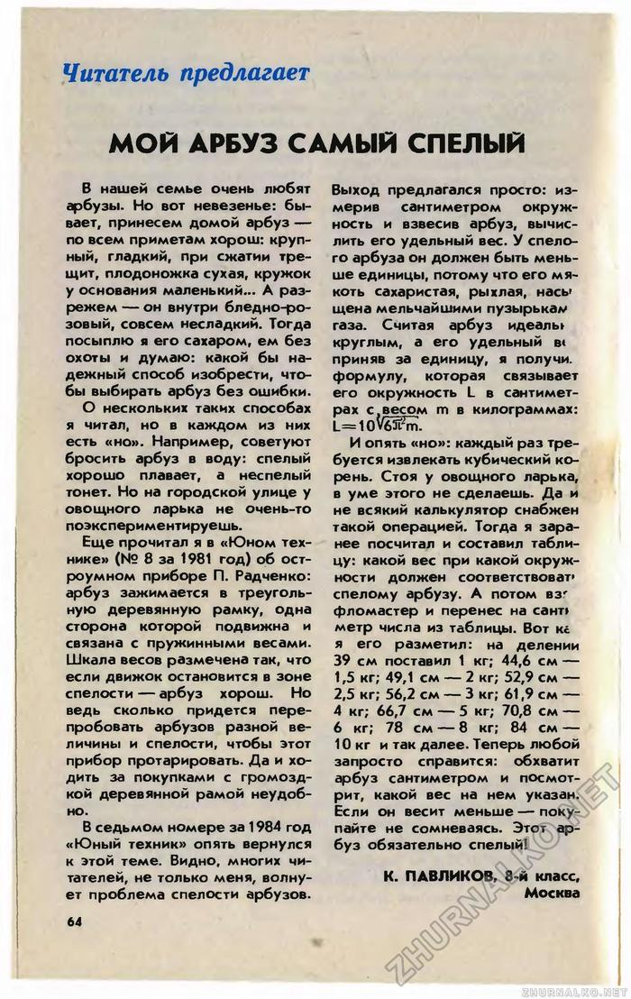

Целью данного сайта является исследование действительно ли можно вычислить спелость арбуза, не разрезая его. Созревая, мякоть арбуза насыщается мельчайшими пузырьками воздуха, поэтому становится легче. Таким образом, было найдено несколько формул для рассчета спелости:
Формула №1(эта формула используется в нашем исследовании)
Зная длину окружности, можем рассчитать оптимальный вес:
m=L3*0.017,
Таблица наблюдений
| Дата | Обхват (средний), см | Вес, формула#1, кг | Вес, факт, кг | Индекс спелости формула#1 | Результаты |
|---|---|---|---|---|---|
| июль | 81 | 9.034 | 9.067 | 100% | Спелый, сочный, не сахаристый, 10/10 |
| 30 июля | 68.5 | 5.464 | 5.200 | 105% | Очень спелый, очень сахаристый, на грани переспелости |
| 1 авг. | 80.5 | 8.868 | 8.160 | 108% | Спелый, в меру сахаристый, очень толстая фигурная корка, 9/10 |
| 2 авг. | 72 | 6.345 | 6.245 | 102% | Хороший, сочный, не сахаристый, у краев светло-розовый, 8/10 |
| 4 авг. | 87 | 11.195 | 10.69 | 105% | Спелый, сладкий, тонкая корка, 9/10 |
| 9 авг. дыня | 71.25 | 6.149 | 5.206 | 115% | Дыня торпеда, очень спелая и вкусная, 10/10 |
| 13 авг. | 75.5 | 7.316 | 7.255 | 101% | Розовый, не очень спелый, не сладкий, 5/10 |
| 14 авг. | 82/93 | 11.389 | 10.600 | 107% | Спелый, 9/10 |
| 24 авг. | 66/78 | 6.345 | 5.750 | 109% | Спелый, 9/10 |
Формула №2
Зная вес, рассчитаем идеальный обхват арбуза стопроцентной спелости:
L > 4.1*∛m
Длина окружности (обхват) спелого арбуза должна быть всегда больше кубического корня из его массы в граммах, умноженного на коэффицент 4,1
Формула №3
(журнал «Юный техник» 08/1981г.)
L=10*∛6*Pi2*m,
Другие признаки спелого арбуза:
- Трещит при сжимании
- Издает гулкий звук при постукивании. Осенью выбирать нужно только «звонкие» арбузы.
- Желтое пятно на боку
- Четко выраженный полосатый рисунок
- Желтоватый сухой хвостик. Если хвостик зеленый – арбуз сорвали еще недозрелым
- Без надрезов и трещин
- Идеальный размер арбуза средний - 5-7кг
Журналы
Статья из журнала «Юный техник» за август 1981 года:


Статья из журнала «Юный техник» за сентябрь 1986 года:
